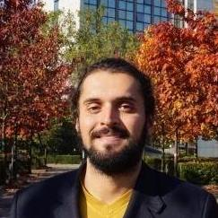

Prof. Dr. Thiago L. L. Siqueira
Idealizador e orientador dos projetos.


Vinícius José R. de Oliveira
Bolsista de Extensão em 2018. Atuou com desenvolvimento tecnológico em conjunto com um egresso mentor e realizou atualizações neste site.

Adilson S. Porto
Bolsista de Extensão em 2017. Auxiliou na organização das oficinas de mentoria oferecidas à distância por egressos(as), bem como no desenvolvimento da versão antiga do site.

Karoliny D. dos Santos
Bolsista de Extensão em 2016. Estabeleceu as primeiras interações com as turmas de egressos(as), tendo auxiliado também na coleta dos dados.